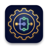
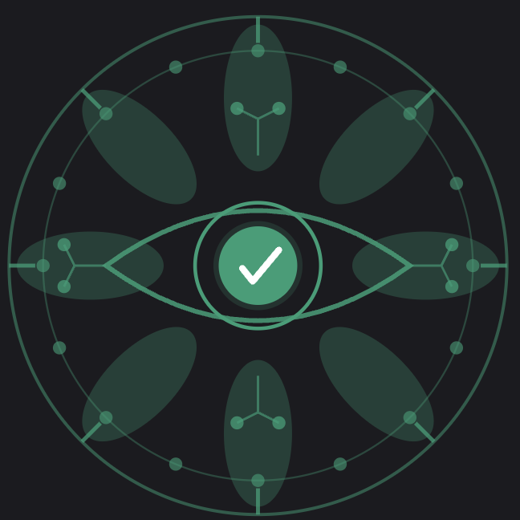
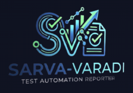

Calm, ad-free, invitation-only apps for children and their families — no clutter, just focused practice.
Gnaana-Kosha
🔒 Invitation-onlyA calm, ad-free learning hub for curious children in grades 3–6 — nine subjects and 13,000+ fact-checked questions. A treasure-house of knowledge.
Visit →Gaṇitha
🔒 Invitation-onlyElementary math & reasoning practice — eight skill areas, a timed Full Practice Test, and a short “Why” explaining every answer you miss.
Visit →Abhyaasa
🔒 Invitation-onlyTrack daily music practice, classes, and fees — kids log their practice and earn rewards, while parents share progress with a teacher. Works on any device — a music practice tracker.
Visit →
Yantra-Yukti
🔒 Invitation-onlyBuild how things work — take apart everyday machines, program their hidden logic with simple rules, then press Run and watch your design come alive. A systems-thinking sandbox for curious kids.
Visit →Open-source tooling for QA engineers and test-automation teams — free to use, code on GitHub.

Swayambhu-QA
⚙️ Open sourceAn agentic-AI QA pipeline: give it a ticket, get back a passing test suite in under 30 minutes. Turns JIRA / GitHub issues into end-to-end tests across Playwright, Cypress, Selenium, REST Assured and more.
Explore →
Sarva-Varadi
⚙️ Open sourceA universal test-reporting framework that unifies results from Playwright, Selenium, REST Assured, Robot Framework and Cucumber into one clean, live dashboard — built for QA teams juggling many tools.
View live demo →